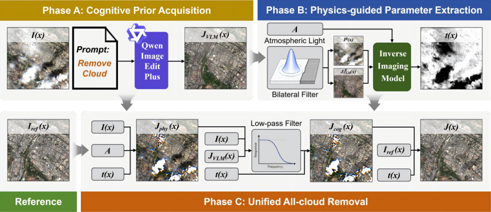
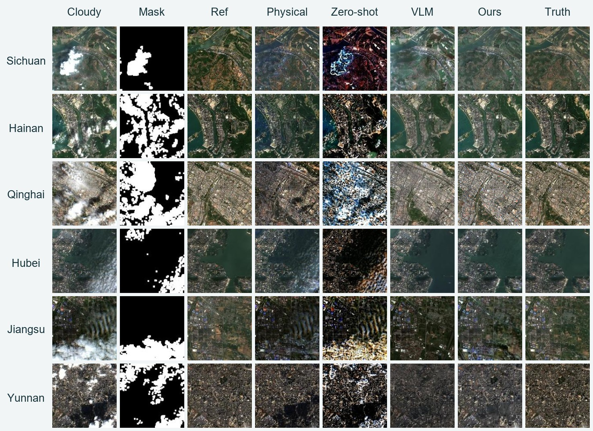
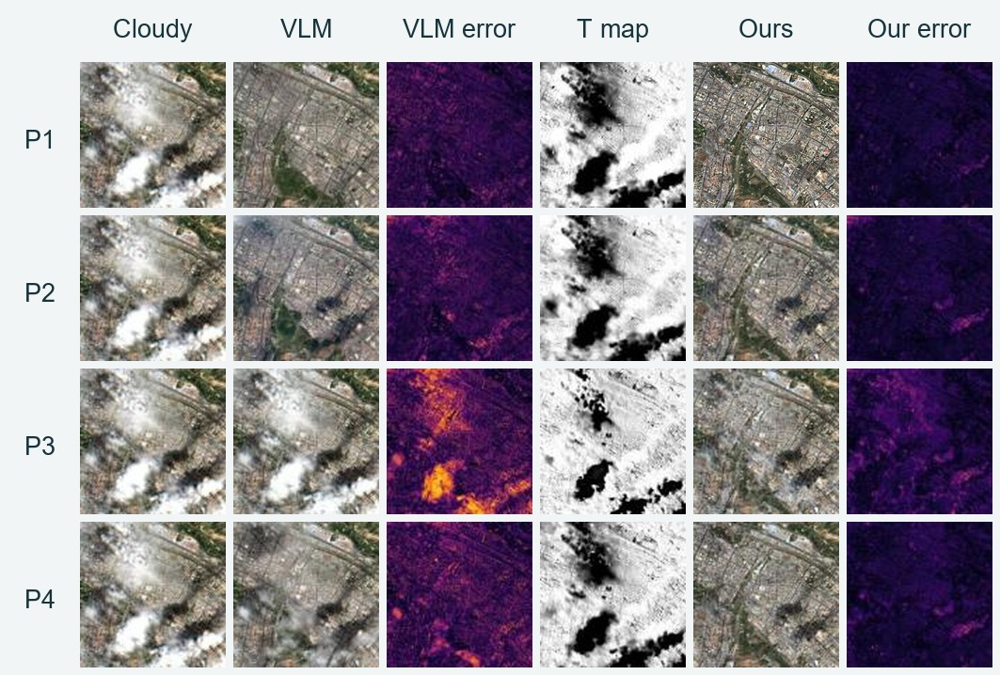

Physics-Guided VLM Priors for All-Cloud Removal
IEEE Geoscience and Remote Sensing Letters · 2026
Wuhan University · Wuhan, China
Abstract
Cloud removal remains a fundamental challenge in optical remote sensing due to heterogeneous cloud degradation. Thin clouds distort surface radiometry through partial transmission, while thick clouds obscure the underlying surface. Existing methods often handle thin-cloud correction and thick-cloud reconstruction separately, requiring explicit cloud-type delineation and causing error accumulation or spatial discontinuities in mixed-cloud scenes. To address this issue, we propose PhyVLM-CR, a physics-guided VLM prior framework for all-cloud removal, which integrates the semantic capability of a Vision-Language Model (VLM) with a physical imaging model. Specifically, the VLM output is incorporated into the estimation of a physical transmission map. The estimated transmission map supports thin-cloud radiometric correction through physical inversion and further provides a continuous weight for balancing current-scene restoration and temporally aligned reference information in low-transmission regions. By coupling the radiometric consistency of the physical model with the semantic and illumination priors of the VLM, PhyVLM-CR achieves physically constrained and semantically informed restoration without explicit cloud-type delineation. Experiments on real-world Sentinel-2 surface reflectance imagery demonstrate that PhyVLM-CR achieves superior visual and quantitative performance compared with existing cloud-removal methods.
PhyVLM_CR
Because direct VLM predictions can hallucinate, PhyVLM-CR uses them as cognitive priors to estimate physical parameters rather than as the final cloud-removal result.

PhyVLM-CR estimates atmospheric light and transmission from the cloudy observation with guidance from the VLM prior. It then combines physical inversion, low-frequency cognitive adjustment, preservation of observed detail, and a radiometrically aligned temporal reference. Transmission continuously controls the balance between restoration from the current image and reference-based reconstruction where the surface is obscured.
All-cloud Removal Results
The manuscript evaluates six 2023 Sentinel-2 scenes using the nearest clear observation as ground truth and the second-nearest as the temporal reference. The images below are reproduced from the supplied manuscript.

Reported quality
PSNR (dB) / SSIM against the clear target. These are paper values, not measurements from a new notebook run.
| Scene | Traditional physical | Zero-shot deep learning | Vision-Language Model | PhyVLM-CR |
|---|---|---|---|---|
| Sichuan | 17.583 / 0.5492 | 12.450 / 0.2679 | 20.890 / 0.5706 | 22.934 / 0.8012 |
| Hainan | 17.531 / 0.5556 | 12.737 / 0.2801 | 13.995 / 0.2547 | 19.168 / 0.7490 |
| Qinghai | 15.847 / 0.7698 | 9.708 / 0.3022 | 14.456 / 0.3182 | 19.312 / 0.8606 |
| Hubei | 19.701 / 0.7313 | 14.568 / 0.3042 | 18.937 / 0.5655 | 26.435 / 0.9025 |
| Jiangsu | 15.495 / 0.5258 | 11.073 / 0.2211 | 18.324 / 0.4125 | 22.332 / 0.7922 |
| Yunnan | 17.214 / 0.6522 | 11.512 / 0.3106 | 13.229 / 0.0323 | 21.149 / 0.8176 |
Best results are bold; second-best results are underlined. PSNR and SSIM are ranked separately within each scene.
Prompt Sensitivity Analysis
Across four Chinese and English prompts, the proposed PhyVLM-CR method shows comparatively stable results despite larger changes in the raw VLM outputs.
| ID | Language | Type | Prompt | VLM PSNR / SSIM | PhyVLM-CR PSNR / SSIM |
|---|---|---|---|---|---|
| P1 | Chinese | Simple | “去云” | 14.456 / 0.3182 | 19.312 / 0.8606 |
| P2 | English | Simple | “Remove clouds” | 14.053 / 0.3755 | 18.522 / 0.8551 |
| P3 | Chinese | Complex | “保持无云区地表信息不变，恢复云覆盖区下的地表” | 9.433 / 0.0542 | 15.442 / 0.7784 |
| P4 | English | Complex | “Keep cloud-free regions unchanged and recover cloud-covered regions” | 12.148 / 0.0340 | 18.282 / 0.8526 |

Colab notebook
The public CR6 notebook covers Earth Engine scene collection, Qwen cognitive-prior acquisition, physics-guided restoration, evaluation, and export.
Download notebookOpen the notebook in Google Colab.
Add EE_PROJECT_ID and DASHSCOPE_API_KEY to Colab Secrets and grant access.
Run cells in order. Earth Engine and DashScope access are required.
Citation
@article{Xu_2026,
title={Physics-Guided VLM Priors for All-Cloud Removal},
author={Xu, Liying and Li, Huifang and Shen, Huanfeng},
journal={IEEE Geoscience and Remote Sensing Letters},
volume={23},
pages={6017305--6017305},
year={2026},
doi={10.1109/LGRS.2026.3720251}
}